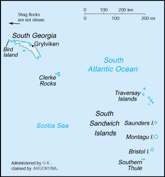
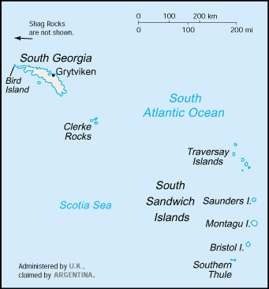

South America :: SOUTH GEORGIA AND SOUTH SANDWICH ISLANDS
Introduction :: SOUTH GEORGIA AND SOUTH SANDWICH ISLANDS
-
The islands, with large bird and seal populations, lie approximately 1,000 km east of the Falkland Islands and have been under British administration since 1908 - except for a brief period in 1982 when Argentina occupied them. Grytviken, on South Georgia, was a 19th and early 20th century whaling station. Famed explorer Ernest SHACKLETON stopped there in 1914 en route to his ill-fated attempt to cross Antarctica on foot. He returned some 20 months later with a few companions in a small boat and arranged a successful rescue for the rest of his crew, stranded off the Antarctic Peninsula. He died in 1922 on a subsequent expedition and is buried in Grytviken. Today, the station houses scientists from the British Antarctic Survey. Recognizing the importance of preserving the marine stocks in adjacent waters, the UK, in 1993, extended the exclusive fishing zone from 12 nm to 200 nm around each island.
Geography :: SOUTH GEORGIA AND SOUTH SANDWICH ISLANDS
-
Southern South America, islands in the South Atlantic Ocean, east of the tip of South America54 30 S, 37 00 WAntarctic Regiontotal: 3,903 sq kmland: 3,903 sq kmwater: 0 sq kmnote: includes Shag Rocks, Black Rock, Clerke Rocks, South Georgia Island, Bird Island, and the South Sandwich Islands, which consist of 11 islandscountry comparison to the world: 177slightly larger than Rhode Island0 kmNAterritorial sea: 12 nmexclusive fishing zone: 200 nmvariable, with mostly westerly winds throughout the year interspersed with periods of calm; nearly all precipitation falls as snowmost of the islands are rugged and mountainous rising steeply from the sea; South Georgia is largely barren with steep, glacier-covered mountains; the South Sandwich Islands are of volcanic origin with some active volcanoesmean elevation: NAelevation extremes: lowest point: Atlantic Ocean 0 mhighest point: Mount Paget (South Georgia) 2,934 mfishagricultural land: 0%arable land 0%; permanent crops 0%; permanent pasture 0%forest: 0%other: 100% (2011 est.)0 sq km (2011)the South Sandwich Islands have prevailing weather conditions that generally make them difficult to approach by ship; they are also subject to active volcanismreindeer - introduced to the islands on several occasions in the 20th century - devastated the native flora and bird species; some reindeer were translocated to the Falkland Islands in 2001, the rest were exterminated (2013-14)the north coast of South Georgia has several large bays, which provide good anchorage
People and Society :: SOUTH GEORGIA AND SOUTH SANDWICH ISLANDS
-
no indigenous inhabitantsnote: the small military garrison on South Georgia withdrew in March 2001, replaced by a permanent group of scientists of the British Antarctic Survey, which also has a biological station on Bird Island; the South Sandwich Islands are uninhabited
Government :: SOUTH GEORGIA AND SOUTH SANDWICH ISLANDS
-
conventional long form: South Georgia and the South Sandwich Islandsconventional short form: South Georgia and South Sandwich Islandsabbreviation: SGSSIetymology: South Georgia was named "the Isle of Georgia" in 1775 by Captain James COOK in honor of British King GEORGE III; the explorer also discovered the Sandwich Islands Group that year, which he named "Sandwich Land" after John MONTAGU, the Earl of Sandwich and First Lord of the Admiralty; the word "South" was later added to distinguish these islands from the other Sandwich Islands, now known as the Hawaiian Islandsoverseas territory of the UK, also claimed by Argentina; administered from the Falkland Islands by a commissioner, who is concurrently governor of the Falkland Islands, representing Queen ELIZABETH IIthe laws of the UK, where applicable, applynone (overseas territory of the UK, also claimed by Argentina)none (overseas territory of the UK, also claimed by Argentina)blue with the flag of the UK in the upper hoist-side quadrant and the South Georgia and South Sandwich Islands coat of arms centered on the outer half of the flag; the coat of arms features a shield with a golden lion rampant, holding a torch; the shield is supported by a fur seal on the left and a Macaroni penguin on the right; a reindeer appears above the crest, and below the shield on a scroll is the motto LEO TERRAM PROPRIAM PROTEGAT (Let the Lion Protect its Own Land)); the lion with the torch represents the UK and discovery; the background of the shield, blue and white estoiles, are found in the coat of arms of James Cook, discoverer of the islands; all the outer supporting animals represented are native to the islands
Economy :: SOUTH GEORGIA AND SOUTH SANDWICH ISLANDS
-
Some fishing takes place in adjacent waters. Harvesting finfish and krill are potential sources of income. The islands receive income from postage stamps produced in the UK, the sale of fishing licenses, and harbor and landing fees from tourist vessels. Tourism from specialized cruise ships is increasing rapidly.
Transportation :: SOUTH GEORGIA AND SOUTH SANDWICH ISLANDS
-
major seaport(s): Grytviken
Military and Security :: SOUTH GEORGIA AND SOUTH SANDWICH ISLANDS
-
defense is the responsibility of the UK
Transnational Issues :: SOUTH GEORGIA AND SOUTH SANDWICH ISLANDS
-
Argentina, which claims the islands in its constitution and briefly occupied them by force in 1982, agreed in 1995 to no longer seek settlement by force